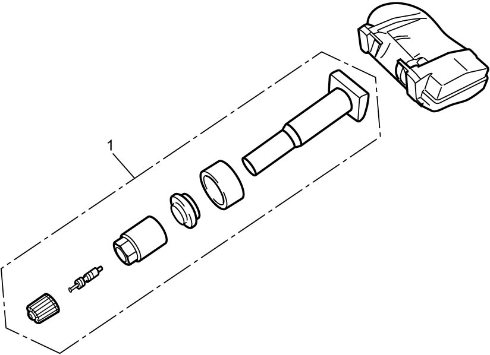
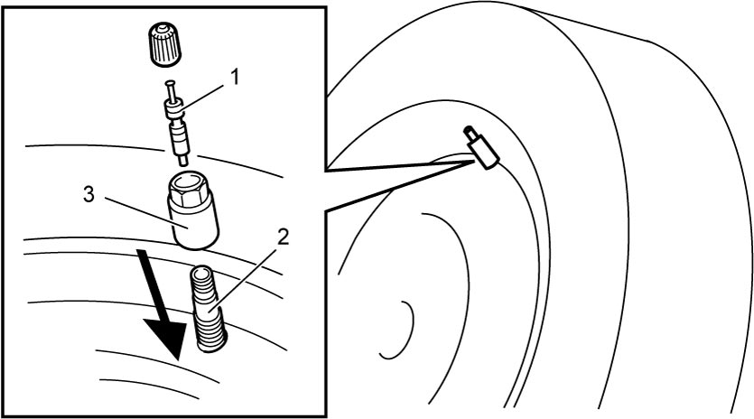
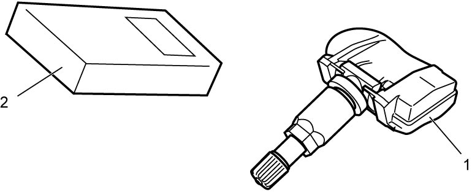
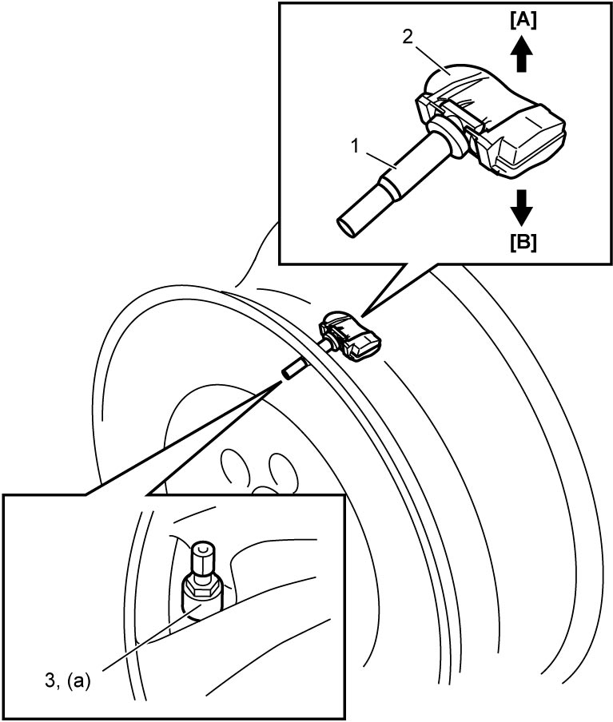

2D
| Tire and/or Tire Pressure Sensor (If Equipped) Mounting and Dismounting |
Failure to take proper precautions when inflating a tire can result in severe personal injury.
•Do not stand over a tire being inflated. The tire’s bead may break if it snaps over the rim’s safety hump, possibly causing personal injury.
•Do not inflate the tire to a pressure exceeding the specified value. Over-inflation may cause the bead to break, causing personal injury.
•Do not inflate the tire to a pressure exceeding the specified value. Over-inflation may cause the bead to break, causing personal injury.
NOTICE:
•Changing a tire using hand tools or tire irons alone may damage tire beads and/or wheel rims. Do not complete changing a tire using those tools.
•Failure to use proper procedures when mounting and dismounting tires can result in improper mounting or damage to the tires and/or tire pressure sensors.
•Failure to use proper procedures when mounting and dismounting tires can result in improper mounting or damage to the tires and/or tire pressure sensors.
—Clean the tire bead seating surfaces on the rims with a wire brush or coarse steel wool to remove lubricants, old rubber and light rust.
—Before mounting or dismounting a tire, lubricate the beads with an approved tire lubricant.
—After mounting a tire, first inflate it to specified value so that its beads are completely seated. Then adjust the pressure to the correct value specified on the “Tire Placard”. If the tire bead is not completely seated at the specified pressure, deflate the tire, re-lubricate the beads and then re-inflate the tire.
•For a TPMS equipped vehicle, observe the following instructions to prevent tire pressure sensors from being damaged:—Before mounting or dismounting a tire, lubricate the beads with an approved tire lubricant.
—After mounting a tire, first inflate it to specified value so that its beads are completely seated. Then adjust the pressure to the correct value specified on the “Tire Placard”. If the tire bead is not completely seated at the specified pressure, deflate the tire, re-lubricate the beads and then re-inflate the tire.
—Drop the tire pressure sensor inside the tire before detaching the tire beads from the wheel rims.
—Check that the size of the replacement tire is as specified on the “Tire Placard”. If a tire of a wrong size is installed, the tire pressure sensor may be broken because of interference with the tire bead.
—Handle tire pressure sensors carefully so as not to impact them.
—Replace TPMS seal set (1) with a new one whenever replacing tire or wheel. Reuse of TPMS seal set can cause air leakage.

—Check that the size of the replacement tire is as specified on the “Tire Placard”. If a tire of a wrong size is installed, the tire pressure sensor may be broken because of interference with the tire bead.
—Handle tire pressure sensors carefully so as not to impact them.
—Replace TPMS seal set (1) with a new one whenever replacing tire or wheel. Reuse of TPMS seal set can cause air leakage.

 "Expand image")
NOTE:
•After replacing tire pressure sensor of TPMS equipped vehicle, register ID code of tire pressure sensor into TPMS control module. If it is not registered, TPMS control module cause the low tire pressure warning light to light up simultaneously with ignition “ON”.
•For tire repaired with flat tire repair sealant, refer to Treatment of Flat Tire Repaired with Sealant first.
•For tire repaired with flat tire repair sealant, refer to Treatment of Flat Tire Repaired with Sealant first.
For Wheel with Tire Pressure Sensor
1)Hoist vehicle and remove wheel.
2)Release air from tire by removing valve core (1).
3)Drop tire pressure sensor (2) into the tire by removing tire pressure sensor mounting nut (3) from wheel.

 "Expand image")
4)Dismount tire using tire changing machine. Follow equipment manufacturer’s instructions.
5)Take tire pressure sensor from tire.
6)Check tire pressure sensor (1) for function using recommended tool (2). Follow equipment manufacturer’s instructions.

 "Expand image")
7)Replace seal set (1) of tire pressure sensor with a new one.
8)Install tire pressure sensor (2) to wheel and then tighten tire pressure sensor mounting nut (3) to specified torque.

 "Expand image")
9)Mount tire using tire changing machine. Follow equipment manufacturer’s instructions. When mounting tire to steel wheel, refer to Matched Tire and Wheel Description (for Vehicle Equipped with Steel Wheel) for installation position of tire and wheel.
10)Install valve core and inflate tire to proper pressure.
11)Check air valve’s fitting part for air leakage with soap water.
12)Register the ID code of the tire pressure sensor into the TPMS control module, referring to Registration Procedure for Tire Pressure Sensor ID Code.
13)Drive vehicle at more than 40 km/h (25 mile/h) for 2 minutes and check that tire and wheel are normal.
For Wheel without Tire Pressure Sensor
1)Hoist vehicle and remove wheel.
2)Release air from tire by removing valve core.
3)Dismount tire using tire changing machine. Follow equipment manufacturer’s instructions.
4)Mount tire using tire changing machine. Follow equipment manufacturer’s instructions. When mounting tire to steel wheel, refer to Matched Tire and Wheel Description (for Vehicle Equipped with Steel Wheel) for installation position of tire and wheel.
5)Install valve core and inflate tire to proper pressure.
6)Check air valve’s fitting part for air leakage with soap water.
7)Drive vehicle at more than 40 km/h (25 mile/h) for 2 minutes and check that tire and wheel are normal.